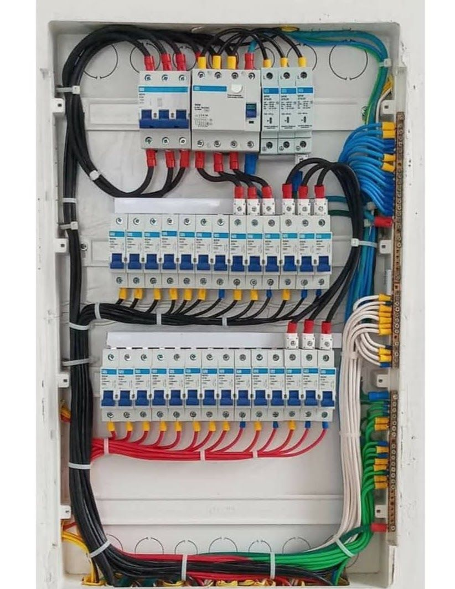
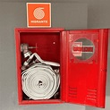
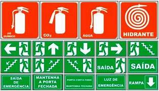

Alvará aprovado não é sinônimo de prédio seguro.
O tempo, o uso diário e as normas que mudaram desde a aprovação do projeto abrem falhas que não existiam no papel. Descubra os riscos ocultos do seu imóvel com uma vistoria técnica orientativa.
A verdadeira segurança é contínua, não um evento único.
Interaja com as categorias para entender pontos críticos frequentemente avaliados em vistorias.

- Quadros de energia desatualizados ou sem identificação.
- Fiação exposta, ressecada ou com improvisos.
- Aterramento, SPDA e manutenção sem rotina documentada.
- Vazamentos ou má conservação em tubulações de gás.

- Extintores vencidos, obstruídos ou fora do local.
- Hidrantes e mangueiras sem teste periódico.
- Alarmes e detectores sem testes registrados.
- Portas corta-fogo travadas ou sem vedação.
- Fissuras, trincas ou deformações que precisam de contexto.
- Infiltrações recorrentes e sinais de umidade.
- Intervenções sem registro ou diagnóstico documentado.
- Manutenção reativa em vez de calendário preventivo.

- Rotas obstruídas ou pouco intuitivas.
- Sinalização sem visibilidade adequada no uso real.
- Iluminação de emergência sem verificação periódica.
- Ausência de rotina de orientação para ocupantes.
Um diagnóstico claro para você decidir o que fazer primeiro.
A equipe avalia os aspectos vitais da segurança do imóvel e organiza as próximas decisões conforme o escopo contratado.
Veja como um risco vira
uma decisão organizada.
Este exemplo mostra a lógica de leitura e priorização. Os dados são ilustrativos e não representam um imóvel ou cliente específico.
Quadro elétrico sem identificação visível
Exemplo de constatação: a identificação dos circuitos não está legível no momento da vistoria demonstrativa.
- Confirmar a condição no local e registrar evidência.
- Solicitar avaliação do profissional responsável.
- Programar correção e guardar comprovante.
Sinalização de equipamento precisa ser revisada
Exemplo de constatação: a orientação visual não é imediatamente perceptível para um usuário não familiarizado com o local.
- Mapear equipamentos e rotas de acesso.
- Verificar aderência ao projeto e ao uso atual.
- Atualizar orientação com responsável habilitado.
Mancha de umidade exige investigação de origem
Exemplo de constatação: uma alteração visual isolada não determina, sozinha, a causa ou a gravidade.
- Registrar localização, extensão e condições.
- Investigar origem com escopo apropriado.
- Definir reparo após diagnóstico.
Rota de fuga precisa de leitura no contexto do uso
Exemplo de constatação: uma rota pode estar livre em um momento e sofrer obstrução em outro.
- Observar a rota em condições reais.
- Registrar obstruções e responsáveis.
- Incluir verificação na rotina predial.
Enquanto isso, também resolvemos o que já apareceu.
Quando fizer sentido e houver escopo, a vistoria pode abrir caminho para reparos, projetos e acompanhamento técnico.
Instalações Elétricas
Serviços elétricos, CFTV, alarmes e manutenção técnica especializada.
Solicitar conversa →Instalações Hidráulicas
Reparos, instalações e manutenção com precisão técnica.
Solicitar conversa →Projetos & PPCI
Projetos de engenharia, prevenção contra incêndio e segurança do trabalho.
Solicitar conversa →Acompanhamento de Obras
Consultoria predial, vistorias técnicas e acompanhamento de cronograma.
Solicitar conversa →Três etapas, do primeiro contato ao plano de ação.
Qualificação
Você informa o tipo de imóvel, cidade e necessidade principal.
Vistoria no local
Avaliação presencial conforme o escopo técnico combinado.
Relatório e plano de ação
Você recebe riscos priorizados e próximos passos possíveis.